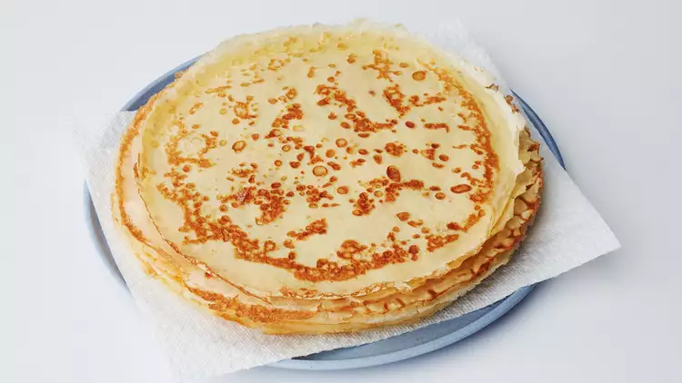

Easy Crepes

This crepe recipe is essential for sweet breakfasts or cozy date nights.
Here is a simple but delicious crepe batter which can be made in minutes.
It's made from ingredients that everyone has on hand.
Ingredients
Serving Size: 4 servings
- 1 cup all-purpose flour
- 2 eggs
- 1/2 cup milk
- 1/2 cup water
- 1/4 teaspoon salt
- 2 tablespoon butter, melted
Steps
-
In a large mixing bowl, whisk together the flour and the eggs. Gradually
add in the milk and water, stirring to combine. Add the salt and butter;
beat until smooth.
-
Heat a lightly oiled griddle or frying pan over medium high heat. Pour
or scoop the batter onto the griddle, using approximately 1/4 cup for
each crepe. Tilt the pan with a circular motion so that the batter coats
the surface evenly.
-
Cook the crepe for about 2 minutes, until the bottom is light brown.
Loosen with a spatula, turn and cook the other side. Serve hot.
Nutrition Facts
Per Serving:
- 216 calories
- 7.4g protein
- 25.5g carbohydrates
- 9.2g fat
- 110.7mg cholesterol
- 235.3mg sodium
Back to Home